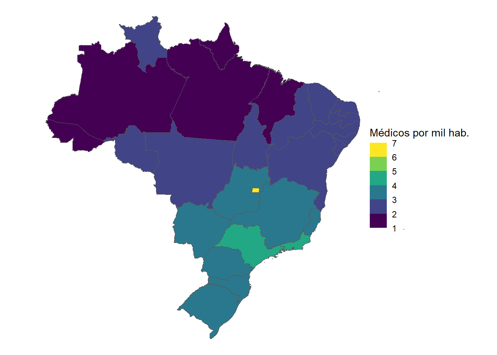
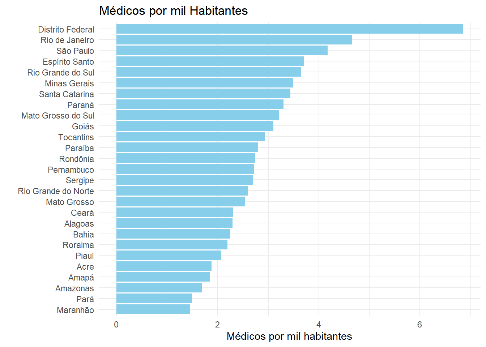
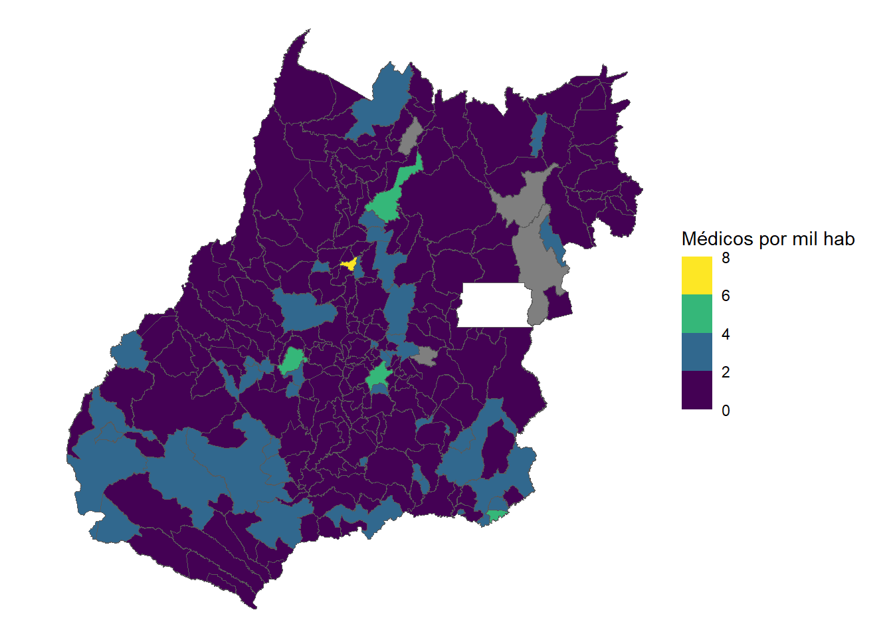
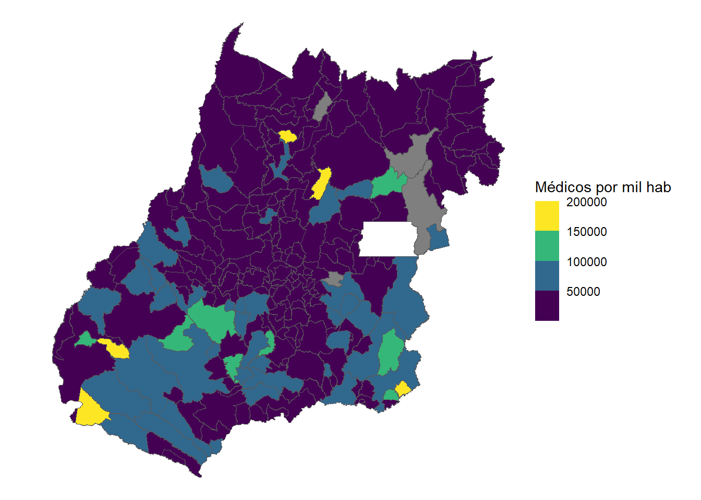

options(scipen = 999)
library(tidyverse)
library(readxl)
library(RODBC)
library(geobr)
library(sf)
library(ggplot2)
library(PNADcIBGE)
library(srvyr)Força de Trabalho em Medicina
Força de Trabalho em Medicina
A análise da força de trabalho em medicina será realizada em dois níveis: nacional e no Estado de Goiás. A nível nacional serão duas análises, salarial e a razão de médicos por habitantes. Enquando no nível Estadual, além da razão de médicos, serão levantados alguns indicadores socioeconômicos e de infraestrutura.
Bbiliotecas que serão utilizadas:
1. Brasil.
1.1. Salário médio de médicos generalista e especialista.
Os salários médios de médicos generalistas e especialistas será feita com base nos dados da PNAD Contínua do quarto trimestre de 2023
base_pnadc <- get_pnadc(2023, 4, vars=c("VD4016","V4010", "UF"))
base_pnad23_4ts <- as_survey(base_pnadc) #HABILITANDO PARA O PACOTE SRVYR
renda_med_geral_4tri23Nacional <- base_pnad23_4ts |> #Nacional
filter(V4010 == "2211") |>
summarise(Rend_med_geral = survey_mean(VD4016, na.rm = TRUE)) |>
select(-Rend_med_geral_se)
renda_med_geral_4tri23 <- base_pnad23_4ts |> #Estadual
filter(V4010 == "2211") |>
group_by(UF) |>
summarise(Rend_med_geral = survey_mean(VD4016, na.rm = TRUE)) |>
select(-Rend_med_geral_se)Warning: There were 10 warnings in `dplyr::summarise()`.
The first warning was:
ℹ In argument: `Rend_med_geral = survey_mean(VD4016, na.rm = TRUE)`.
ℹ In group 1: `UF = Rondônia`.
Caused by warning in `svrVar()`:
! 35 replicates gave NA results and were discarded.
ℹ Run `dplyr::last_dplyr_warnings()` to see the 9 remaining warnings.renda_med_esp_4tri23Nacional <- base_pnad23_4ts |> #Nacional
filter(V4010 == "2212") |>
summarise(Rend_esp_geral = survey_mean(VD4016, na.rm = TRUE)) |>
select(-Rend_esp_geral_se)
renda_med_esp_4tri23 <- base_pnad23_4ts |> #Estadual
filter(V4010 == "2212") |>
group_by(UF) |>
summarise(Rend_med_esp = survey_mean(VD4016, na.rm = TRUE)) |>
select(-Rend_med_esp_se)Warning: There were 8 warnings in `dplyr::summarise()`.
The first warning was:
ℹ In argument: `Rend_med_esp = survey_mean(VD4016, na.rm = TRUE)`.
ℹ In group 1: `UF = Rondônia`.
Caused by warning in `svrVar()`:
! 9 replicates gave NA results and were discarded.
ℹ Run `dplyr::last_dplyr_warnings()` to see the 7 remaining warnings.renda_med <- renda_med_geral_4tri23 |>
left_join(renda_med_esp_4tri23, by = c("UF" = "UF"))1.2. Razão de médicos por habitantes.
Para este cálculo, é considerado o número de registros de médicos no Conselho Federal de Medicina com referência a data de 05/06/2023. E os dados populacionais utilizados é referente ao Censo 2022 - IBGE.
medicos_cfm <- read_excel("C:/Users/alefs/OneDrive/Documentos/Analise_FTS_medicos/fts_medico/01-dados/medicos_cfm.xlsx")
censo_uf <- read_excel("C:/Users/alefs/OneDrive/Documentos/Analise_FTS_medicos/fts_medico/01-dados/censo_uf.xlsx")
# SHAPEFILE PARA GERAR MAPA CLOROPÉTICO
malha_UF <- st_read("C:/Users/alefs/OneDrive/Documentos/Analise_FTS_medicos/fts_medico/02-scripts/malha_uf/BR_UF_2022.shp")Reading layer `BR_UF_2022' from data source
`C:\Users\alefs\OneDrive\Documentos\Analise_FTS_medicos\fts_medico\02-scripts\malha_uf\BR_UF_2022.shp'
using driver `ESRI Shapefile'
Simple feature collection with 27 features and 5 fields
Geometry type: MULTIPOLYGON
Dimension: XY
Bounding box: xmin: -73.99045 ymin: -33.75118 xmax: -28.84764 ymax: 5.271841
Geodetic CRS: SIRGAS 2000#INTEGRAÇÃO DOS DATAFRAMES
mapa_med_cfm <- malha_UF |>
left_join(censo_uf, by = c("NM_UF" = "UF"))
mapa_med_cfm <- mapa_med_cfm |>
left_join(medicos_cfm, by = c("SIGLA_UF" = "UF"))
mapa_med_cfm <- mapa_med_cfm |>
mutate(razao_med = (Medicos/populacao)*1000)
#TRANSFORMAÇÃO DA RAZÃO DE MÉDICOS POR MIL HABITANTES
razao_medicos_brasil <- mapa_med_cfm |>
mutate(razao = (sum(Medicos)/sum(populacao))*1000)No código abaixo, é gerado um mapa de barras horizontal e um mapa cloropético.
#MAPA CLOROPÉTICO
ggplot(data = mapa_med_cfm) +
geom_sf(aes(fill = razao_med, geometry = geometry)) + # Adicione a estética geometry
scale_fill_viridis_b(limits = c(1, 7)) + # Use a escala de preenchimento Viridis
labs(fill = "Médicos por mil hab.") + # Etiqueta para a legenda de cores
theme_void() +
theme(
legend.box.spacing = unit(-2, "cm"))
# GRÁFICO DE BARRA HORIZONTAL
ggplot(mapa_med_cfm, aes(x = reorder(NM_UF, razao_med), y = razao_med)) +
geom_bar(stat = "identity", fill = "skyblue") + # Usar uma única cor
coord_flip() + # Inverter os eixos para criar barras horizontais
labs(x = "", y = "Médicos por mil habitantes", title = "Médicos por mil Habitantes") +
theme_minimal()
#SALVANDO A IMAGEM GERADA
ggsave('medicos_por_hab_uf_cfm.png', width = 8, height = 8, dpi = 500)2. Goiás.
2.1 Levantamento dos dados populacionais.
A coleta de dados populacionais utilizada foi do Censo 2022 através do site oficial do IBGE, exportada em formato xlsx. E em seguida, o tratamento dos dados.
censo_municipios_goias <- read_excel("C:/Users/alefs/OneDrive/Documentos/Analise_FTS_medicos/fts_medico/01-dados/censo municipios goias.xlsx")
# CONFIGURANDO BASE MASCULINO
faixa_masculino <- censo_municipios_goias[,1:23] |>
gather(key = "faixa_etaria", value = "total", 3:23) |>
mutate(sexo = "Masculino", .after = municipio) |>
mutate(faixa_etaria = gsub("-H", "", faixa_etaria))
# CONFIGURANDO BASE FEMININO
faixa_feminino <- censo_municipios_goias[,c(1:2, 24:44)] |>
gather(key = "faixa_etaria", value = "total", 3:23) |>
mutate(sexo = "Feminino", .after = municipio) |>
mutate(faixa_etaria = gsub("-M", "", faixa_etaria))
# EMPILHANDO AS DUAS BASES
faixa_total <- rbind(faixa_feminino, faixa_masculino) |>
mutate(total = replace_na(total, 0)) |>
mutate(total = gsub("-", "0", total)) |>
mutate(total = as.numeric(total))2.2 Levantamento dos dados de profissionais de saúde por munícipio;
O levantamento de dados de profissionais de saúde por munícipio será realizado na métrica FTE (Full-time Equivalet) que considera as horas úteis de trabalho. A base de dados utilizado é o Cadastro Nacional de Estalecimentos de Saúde.
A primeira etapa, é estabelecer a conexão com o banco de dados hospedados no Dremio.
# codigo para acessar dados de um datalake
dremio_host <- Sys.getenv("endereco")
dremio_port <- Sys.getenv("port")
dremio_uid <- Sys.getenv("uid")
dremio_pwd <- Sys.getenv("datalake")
channel <- odbcDriverConnect(sprintf("DRIVER=Dremio Connector;
HOST=%s;
PORT=%s;
UID=%s;
PWD=%s;
AUTHENTICATIONTYPE=Basic Authentication;
CONNECTIONTYPE=Direct",
dremio_host,
dremio_port,
dremio_uid,
dremio_pwd))
query <- 'SELECT * FROM "Open Analytics Layer".Profissionais."Quantidade de profissionais de saúde por município, na métrica da FTE"'
profissionais_saude <- sqlQuery(channel, query, as.is = TRUE)Em seguida, os dados serão tratados de formar a filtrar o ano de 2024, a categoria de Médicos dos municípios de Goiás.
#FILTRANDO OS MEDICOS E MUNICIPIOS DE GOIÁS DA BASE DE FTS
medicos_municipios <- profissionais_saude |>
filter(ano == "2024") |>
filter(uf_sigla == "GO") |>
filter(categoria == "Médico")
#CALCULANDO A POPULAÇÃO TOTAL POR MUNICÍPIO
população_municipios <- faixa_total |>
select(ibge, municipio, total) |>
group_by(ibge, municipio) |>
summarise(população = sum(total)) |>
mutate(ibge = substr(ibge, 1, 6))`summarise()` has grouped output by 'ibge'. You can override using the
`.groups` argument.2.3 Calculando a razão médicos por habitantes;
A seguir iremos juntar as duas bases criadas: população_municipios e medicos_municipios em uma nova base. Para que assim, possa ser calculado a razão de médicos por munícipios.
#CALCULANDO A RAZÃO MEDICO/POPULAÇÃO PARA TODOS OS NÍVEIS DE ATENÇÃO
medicos_total_mun <- medicos_municipios |>
select(cod_ibge, uf_sigla, FTE_40, municipio) |>
group_by(cod_ibge, uf_sigla, municipio) |>
summarise(medicos_FTE_40 = sum(FTE_40), .groups = 'drop')
# AGREGANDO A BASE DE MEDICOS POR MUNICÍPIO NA BASE POPULAÇÃO POR MUNICÍPIO
razao_med_total <- população_municipios |>
left_join(medicos_total_mun, by = c("ibge" = "cod_ibge")) |>
mutate(razão_medicos = medicos_FTE_40/população) #CRIANDO A VARIÁVEL RAZÃO DE MÉDICOS POR POPULAÇÃOEm seguida, será gerado um gráfico cloropético com o shapefile dos limites municipais disponibilizados pelo IBGE.
malha_municipal <- st_read("C:/Users/alefs/OneDrive/Documentos/Analise_FTS_medicos/fts_medico/02-scripts/malha_municipal_go/GO_Municipios_2022.shp") |>
mutate(CD_MUN = substr(CD_MUN, 1, 6))Reading layer `GO_Municipios_2022' from data source
`C:\Users\alefs\OneDrive\Documentos\Analise_FTS_medicos\fts_medico\02-scripts\malha_municipal_go\GO_Municipios_2022.shp'
using driver `ESRI Shapefile'
Simple feature collection with 246 features and 4 fields
Geometry type: MULTIPOLYGON
Dimension: XY
Bounding box: xmin: -53.24856 ymin: -19.49836 xmax: -45.90716 ymax: -12.39497
Geodetic CRS: SIRGAS 2000base_final <- malha_municipal |>
left_join(razao_med_total, by = c("CD_MUN" = "ibge"))
base_final <- base_final |>
mutate(razão_medicos = razão_medicos*1000)
ggplot(data = base_final) +
geom_sf(aes(fill = razão_medicos, geometry = geometry)) + # Adicione a estética geometry
scale_fill_viridis_b(limits = c(0, 8)) + # Use a escala de preenchimento Viridis
labs(fill = "Médicos por mil hab") + # Etiqueta para a legenda de cores
theme_void()
ggsave('medicos_por_hab_goias.png', width = 8, height = 8, dpi = 500)2.4 Levantamento de dados socio-econômicos por município.
O próximo passo é levantar os dados socioeconômicos e integrar com a informação da razão de médicos do dataframe razao_med_total. Os indicadores serão atualizados no dataframe que chamaremos de base_final.
2.4.1 PIB per capita.
Os dados do PIB por município foram coletados do Sistema IBGE de Recuperação Automática - SIDRA do ano de 2021. Para o cálculo do PIB per capita, dividiu o PIB bruto pelo dado populacional do Censo 2022.
PIB <- read_excel("C:/Users/alefs/OneDrive/Documentos/Analise_FTS_medicos/fts_medico/01-dados/PIB.xlsx") |>
mutate(ibge = substr(ibge, 1, 6))
base_final <- base_final |>
left_join(PIB, by = c("CD_MUN" = "ibge")) |>
mutate(pib_percapita = (PIB/população)*1000)
base_final <- base_final |>
rename(ibge = CD_MUN)
base_final <- base_final |>
select(ibge, municipio.x, população, medicos_FTE_40, razão_medicos, pib_percapita)A seguida, será gerado mais um gráfico cloropético conforme já foi feito no ponto 2.3
ggplot(data = base_final) +
geom_sf(aes(fill = pib_percapita, geometry = geometry)) + # Adicione a estética geometry
scale_fill_viridis_b(limits = c(10000, 200000)) + # Use a escala de preenchimento Viridis
labs(fill = "Médicos por mil hab") + # Etiqueta para a legenda de cores
theme_void()
ggsave('medicos_por_hab_goias.png', width = 8, height = 8, dpi = 500)2.4.2 Índice de Desenvolvimento Humano (IDH).
Os dados do Índice de Desenvolvimento Humano foram coletados do Atlas Brasil de 2010 quando ocorreu a última publicação pelo Programa das Nações Unidas para o Desenvolvimento (PNUD), e pode ser consultado no seguinte link: http://www.atlasbrasil.org.br/consulta/planilha
IDH <- read_excel("C:/Users/alefs/OneDrive/Documentos/Analise_FTS_medicos/fts_medico/01-dados/IDH.xlsx") |>
mutate(ibge = substr(ibge, 1, 6))
base_final <- base_final |>
left_join(IDH, by = c("ibge" = "ibge"))
base_final <- base_final |>
select(-municipio.x)2.4.3 Índice de Gini.
Os dados do Índice de Gini que mede a desiguldade de renda foram coletados do Atlas Brasil de 2010 quando ocorreu a última publicação, pode ser consultado no seguinte link: http://www.atlasbrasil.org.br/consulta/planilha
Gini <- read_excel("C:/Users/alefs/OneDrive/Documentos/Analise_FTS_medicos/fts_medico/01-dados/Gini.xlsx") |>
mutate(ibge = substr(ibge, 1, 6))
base_final <- base_final |>
left_join(Gini, by = c("ibge" = "ibge"))
base_final <- base_final |>
select(-Territorialidades)2.4.4 Taxa de Urbanização.
A fonte dos seguintes dados de urbanização, foram coletadas do IBGE da edição de 2019. A metodologia utilizada é um mapeamento realizado via satélite. Para mais informações consultar o link: https://www.ibge.gov.br/geociencias/cartas-e-mapas/redes-geograficas/15789-areas-urbanizadas.html?=&t=o-que-e
urban <- read_excel("C:/Users/alefs/OneDrive/Documentos/Analise_FTS_medicos/fts_medico/01-dados/Urbanização.xlsx") |>
mutate(ibge = substr(ibge, 1, 6))
urban <- urban |>
select(-municipio)
base_final <- base_final |>
left_join(urban, by = c("ibge" = "ibge"))
base_final <- base_final |>
mutate(tx_urban = km_urbanizado/km_mapeado)2.4.5 Número de Inscritos no Bolsa Família.
A coleta de dados do número de inscritos no Cadastro Único referentes ao mês 05/2024 foi realizado no VIS DATA 3 da Secretaria de Avaliação, Gestão da Informação e Cadastro Único - SAGICAD. Os dados são do TOTAL de pessoas inscritas no programa desagregadas por município. O link para consulta: https://aplicacoes.cidadania.gov.br/vis/data3/data-explorer.php
cadunico <- read_excel("C:/Users/alefs/OneDrive/Documentos/Analise_FTS_medicos/fts_medico/01-dados/cadunico.xlsx") |>
mutate(ibge = substr(ibge, 1, 6))
cadunico <- cadunico |>
select(-Unidade_Territorial)
base_final <- base_final |>
left_join(cadunico, by = c("ibge" = "ibge"))
base_final <- base_final |>
mutate(cadunico_pop = `Quantidade total de pessoas inscritas no Cadastro Único`/população)
base_final <- base_final |>
select(-medicos_FTE_40, -população, -km_urbanizado, -km_mapeado, - `Quantidade total de pessoas inscritas no Cadastro Único`)2.5 Levantamento de indicadores de Infraestrutura.
A seguir serão coletados dados relacionados a infraestrutura de saúde dos municípios de Goiás. Todos os indicadores serão coletados do Cadastro Nacional de Estabelecimentos de Saúde no ano de 2024.
2.5.1 Número de leitos por município.
query <- 'SELECT * FROM "Open Analytics Layer".Infraestrutura."Quantidade de leitos de UTI por tipo e município"'
leitos_brasil <- sqlQuery(channel, query, as.is = TRUE)
leitos_goias <- leitos_brasil |>
filter(ano == "2024") |>
filter(uf_sigla == "GO")2.5.2 Número de estabelecimentos de saúde por município.
query <- 'SELECT * FROM "Open Analytics Layer".Infraestrutura."Quantidade de estabelecimentos de saúde por tipo e nos municípios"'
estabelecimetos_brasil <- sqlQuery(channel, query, as.is = TRUE)
estabelecimentos_goias <- estabelecimetos_brasil |>
filter(ano == "2024") |>
filter(uf_sigla == "GO") |>
group_by(cod_ibge) |>
mutate(numero_estabelecimentos = as.numeric(numero_estabelecimentos)) |>
summarise(estabelecimentos = sum(numero_estabelecimentos))